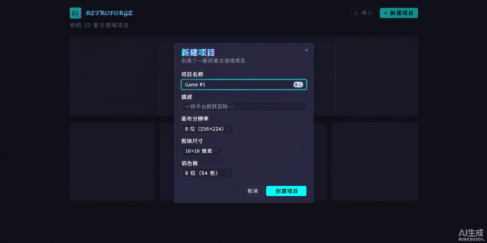
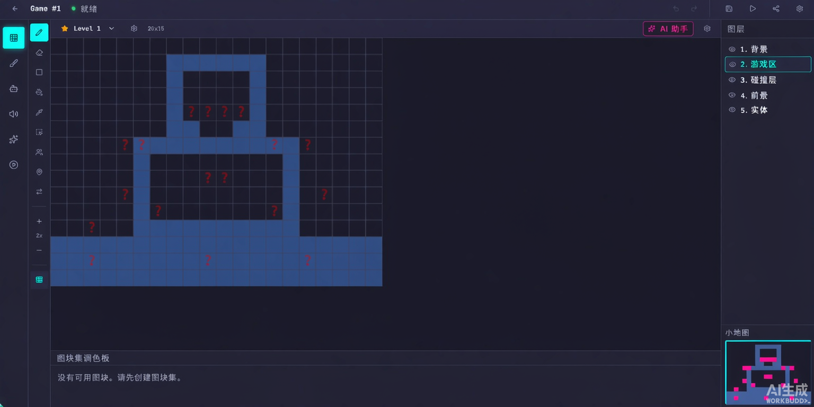
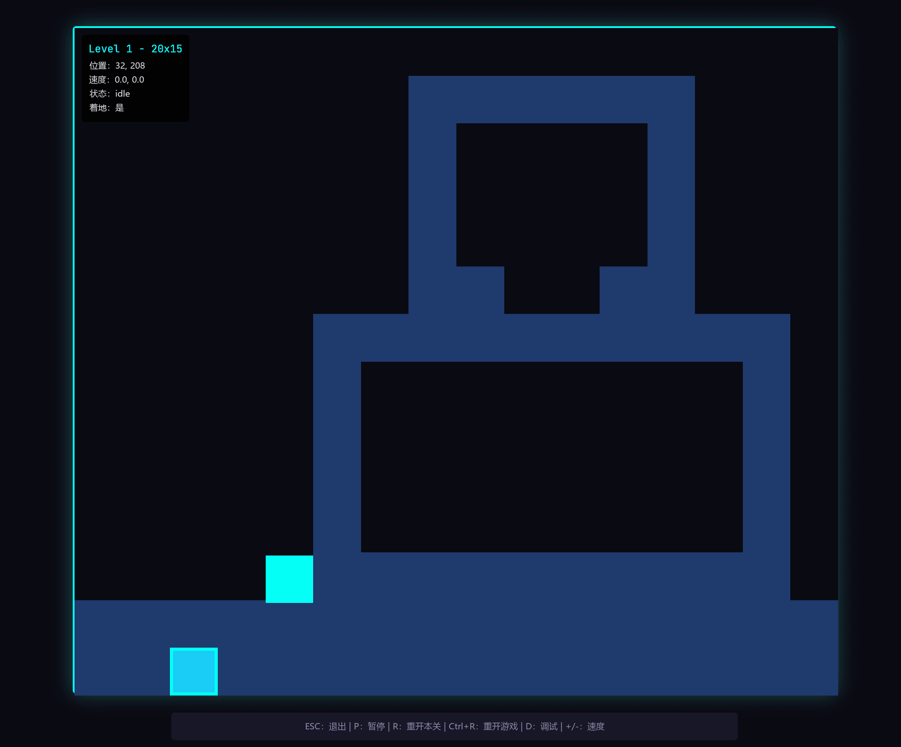
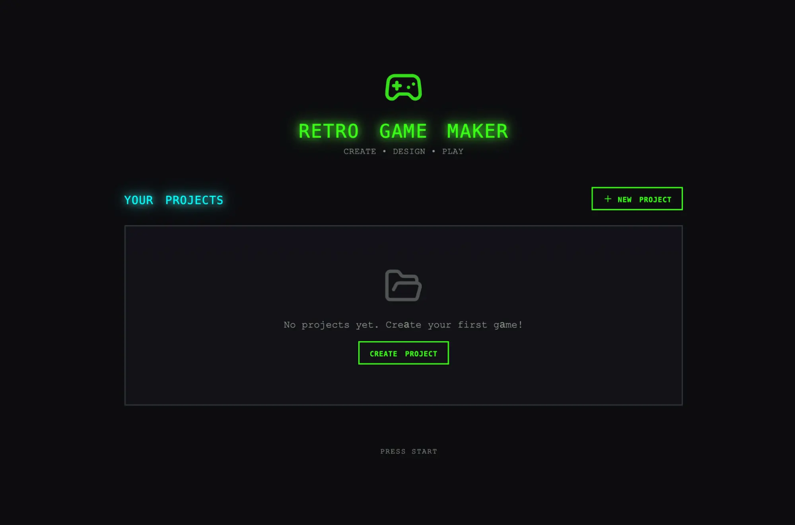
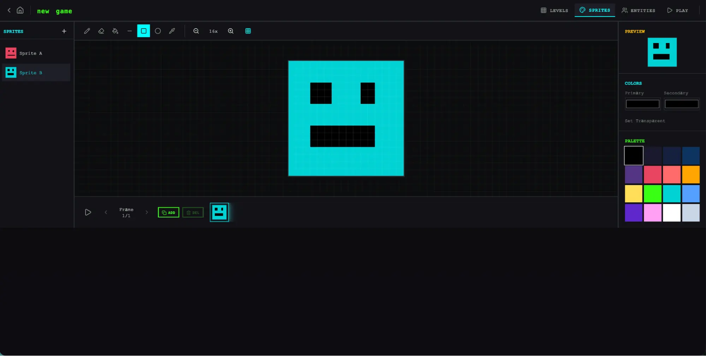
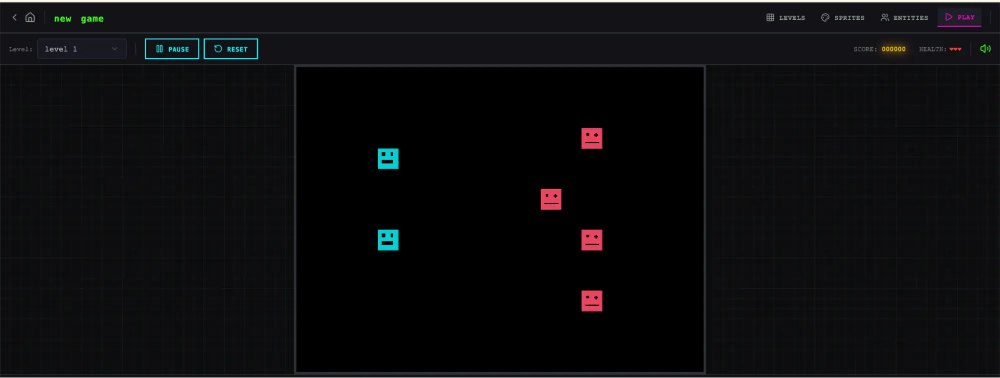
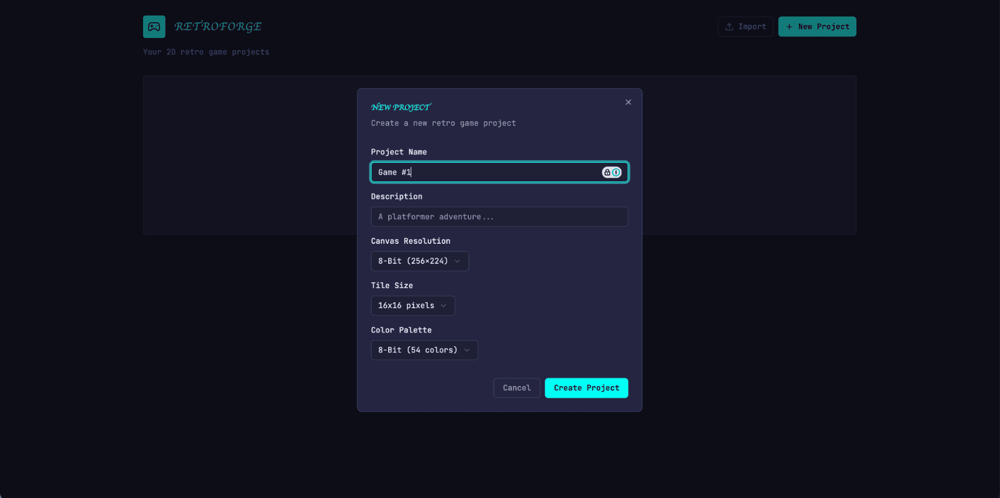
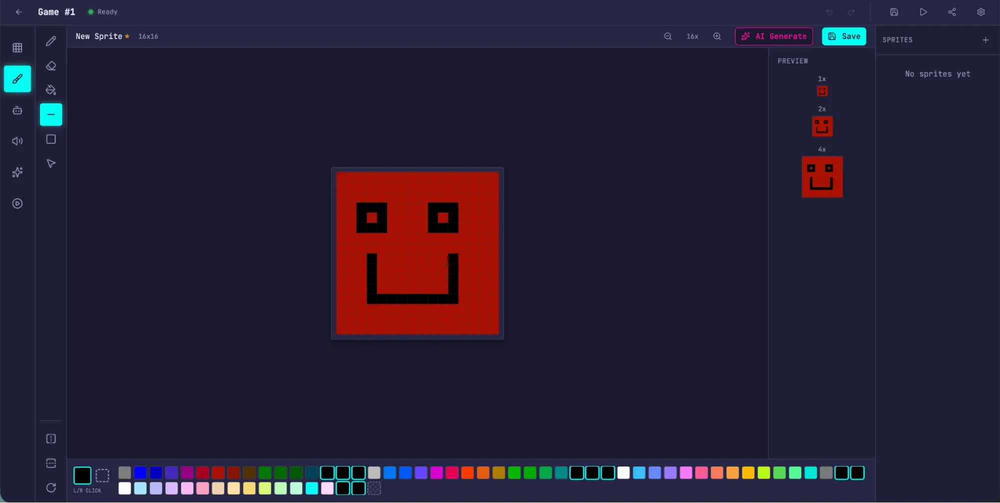
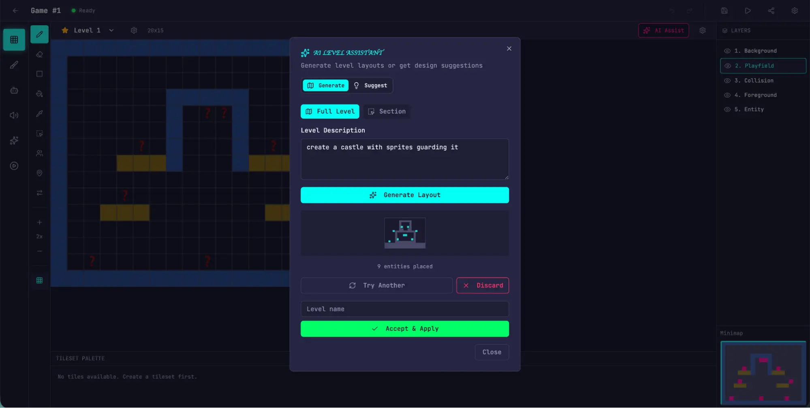
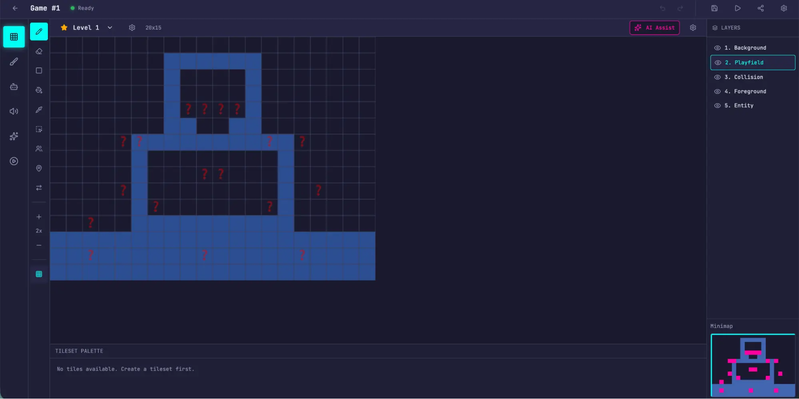

面向长时运行应用开发的脚手架设计
📖 中文摘要
专业术语注解
脚手架（harness）：编排智能体、管理上下文与任务的外部系统生成器与评估器：受GAN启发、把产出与打分分开以形成反馈回路的双智能体结构上下文焦虑：模型接近自认的上下文上限时过早草草收尾的倾向冲刺契约（sprint contract）：生成器与评估器在写代码前就“完成”标准达成一致的约定上下文重置：清空上下文窗口、用结构化交接把状态带给新智能体的做法📄 中文全文
- 类别： 工程（Engineering）
- 来源： https://www.anthropic.com/research/harness-design-long-running-apps
工程（Engineering） 2026 年 3 月 24 日 已发布 2026 年 3 月 24 日 团队 工程 主题
作者 Prithvi Rajasekaran，来自我们的 Labs 团队。 用一支并行 Claude 团队构建 C 编译器面向长时运行智能体的高效脚手架让 Claude Code 更自主地工作Claude Code 最佳实践 相关文章 * 工程 2026 年 2 月 5 日 用一支并行 Claude 团队构建 C 编译器
阅读更多 过去几个月里，我一直在研究两个相互关联的问题：让 Claude 产出高质量的前端设计，以及让它在无人干预的情况下构建完整的应用。这项工作源自此前在前端设计技能和长时运行编程智能体脚手架上的努力，在这些工作中，我和同事们通过提示词工程与脚手架设计把 Claude 的表现提升到了远高于基线的水平——但两者最终都遇到了天花板。 为了实现突破，我寻找那些能在两个截然不同的领域都成立的新型 AI 工程方法：一个领域由主观品味定义，另一个领域则由可验证的正确性与可用性定义。受生成对抗网络（GAN）启发，我设计了一种由生成器（generator）智能体和评估器（evaluator）智能体组成的多智能体结构。要让评估器能够可靠地、并且带着品味地为输出打分，首先需要制定一套评判标准，把「这个设计好不好？」这类主观判断转化为具体、可评分的条款。 随后我把这些技术应用到长时运行的自主编程中，并从早前的脚手架工作里沿用了两条经验：把构建过程分解为易于处理的小块，以及用结构化产物在不同会话之间交接上下文。最终成果是一套由规划器、生成器和评估器组成的三智能体架构，它能在长达数小时的自主编码会话中产出功能丰富的全栈应用。
为何简单直接的实现会失败
我们此前已经证明，脚手架设计对长时运行智能体编程的效果有着实质性影响。在更早的一项实验中，我们用一个初始化智能体把产品规格分解为任务清单，再用一个编程智能体逐项实现各个功能，并在交接时给出产物以便跨会话携带上下文。更广泛的开发者社区也得出了类似的洞见，例如「Ralph Wiggum」方法用钩子或脚本让智能体保持在持续迭代的循环中。 但有些问题一直顽固存在。对于更复杂的任务，智能体仍会随时间推移逐渐偏离正轨。在拆解这一问题时，我们观察到执行这类任务的智能体有两种常见的失败模式。 第一种是，随着上下文窗口被填满，模型往往会在长任务上失去连贯性（参见我们关于上下文工程的文章）。有些模型还会表现出「上下文焦虑」（context anxiety），即在接近它们自认为的上下文上限时，开始过早地草草收尾。上下文重置（context reset）——彻底清空上下文窗口并启动一个全新的智能体，同时用结构化交接把上一个智能体的状态和后续步骤带过来——可以同时解决这两个问题。 这与压缩（compaction）不同：压缩是把对话中较早的部分就地做摘要，让同一个智能体能在缩短后的历史上继续工作。压缩虽然保留了连续性，却没有给智能体一张干净的白纸，因此上下文焦虑仍可能挥之不去。重置提供的是一张干净的白纸，代价是交接产物必须带有足够的状态，好让下一个智能体利落地接手工作。在早前的测试中，我们发现 Claude Sonnet 4.5 表现出的上下文焦虑非常强烈，单靠压缩不足以支撑强劲的长任务表现，因此上下文重置成了脚手架设计中不可或缺的一环。这解决了核心问题，但也给每次脚手架运行带来了编排复杂度、token 开销和延迟。 第二个问题此前我们没有处理过，即自我评估。当被要求评估自己产出的工作时，智能体往往自信满满地夸赞自己的成果——即便在人类观察者看来，质量明显平平。这一问题在设计这类主观任务上尤其突出，因为那里没有像可验证的软件测试那样的二元检验。一个版面是精致还是俗套，属于判断问题，而智能体在给自己的作品打分时一贯偏向正面。 然而，即便在确实有可验证结果的任务上，智能体有时仍会表现出糟糕的判断力，从而妨碍它在完成任务过程中的表现。把「干活的智能体」和「评判它的智能体」分开，被证明是解决这一问题的有力杠杆。这种分离本身并不会立刻消除那份宽容：评估器依然是一个大语言模型，天然倾向于对大语言模型生成的输出网开一面。但把一个独立的评估器调教得更为挑剔，要比让生成器对自身作品吹毛求疵容易得多；而一旦有了这种外部反馈，生成器就有了可以据以迭代的具体依据。
前端设计：让主观质量变得可评分
我先在前端设计上做实验，因为自我评估问题在那里最为明显。在不加任何干预的情况下，Claude 通常倾向于选择安全、可预期的版面：技术上能用，视觉上却平淡无奇。 有两点洞见塑造了我为前端设计搭建的脚手架。第一，美学虽然无法被完全化约为一个分数——个人的品味也总有差异——却可以通过编码了设计原则与偏好的评分标准来改进。「这个设计美吗？」很难给出前后一致的回答，但「它是否遵循了我们关于好设计的原则？」就给了 Claude 一个可以据以打分的具体依据。第二，把前端的生成与前端的评分分开，我们就能建立起一条反馈回路，推动生成器产出更强的成果。 基于这些想法，我写下了四条评分标准，并把它们同时放进生成器和评估器智能体的提示词里： * 设计质量： 这个设计给人的感觉是一个浑然一体的整体，还是一堆零件的拼凑？这方面做得好，意味着色彩、排版、布局、图像及其他细节共同营造出一种独特的氛围与气质。 * 原创性： 有没有体现出定制化的决策，还是说只是模板版面、库的默认样式和 AI 生成的套路？一位人类设计师应当能认出其中刻意为之的创意选择。未经改动的现成组件——或者紫色渐变叠在白色卡片上这类 AI 生成的明显痕迹——在这一项上不及格。 * 工艺： 技术执行层面：排版的层级、间距的一致性、色彩的和谐、对比度。这是一项能力检查，而非创意检查。大多数合理的实现默认就能在这里过关；不及格意味着基本功出了问题。 * 功能性： 独立于美学的可用性。用户能否理解界面的用途、找到主要操作、并无需猜测就完成任务？
我更看重设计质量与原创性，而非工艺与功能性。Claude 在工艺和功能性上默认就已经得分不低，因为所需的技术能力往往是模型与生俱来的。但在设计与原创性上，Claude 产出的结果充其量只能算平淡。这些标准明确惩罚高度套路化的「AI 泔水」（AI slop）模式，而通过加大设计与原创性的权重，把模型推向更愿意在美学上冒险。 我用带有详细分数拆解的少样本示例（few-shot examples）来校准评估器。这确保了评估器的判断与我的偏好对齐，并减少各轮迭代之间的分数漂移。 我基于 Claude Agent SDK 搭建了这个循环，它让编排保持简单。生成器智能体先根据用户提示词创建一个 HTML/CSS/JS 前端。我给评估器配备了 Playwright MCP，让它能在为每一项标准打分并写出详细评语之前，直接与实时页面交互。在实践中，评估器会自行浏览页面、截图并仔细研究实现细节，然后给出评估。这份反馈会回流给生成器，作为下一轮迭代的输入。每次生成我跑 5 到 15 轮迭代，随着生成器对评估器评语作出回应，每一轮通常会把它推向更具辨识度的方向。由于评估器是在主动浏览页面，而不是对着一张静态截图打分，每个周期都要消耗真实的墙上时间。完整运行最长会拉到四个小时。我还指示生成器在每次评估之后做一个策略性决策：如果分数走势良好，就深化当前方向；如果这套思路行不通，就彻底转向另一种美学。 在各次运行中，评估器的评分会随迭代提升，然后进入平台期，且仍有上升空间。有些生成是渐进式地打磨，另一些则在迭代之间出现了急剧的美学转向。 标准中的措辞把生成器引向了我并未完全预料到的方向。加入「最好的设计应达到博物馆级水准」这类短语，会把设计推向某种特定的视觉趋同，这表明与标准相关的提示词直接塑造了产出结果的性格。 虽然分数大体上随迭代提升，但走势并不总是干净利落的线性。较靠后的实现整体上往往更好，但我经常遇到更偏爱中间某一轮而非最后一轮的情况。实现的复杂度也往往随轮次上升，生成器为回应评估器的反馈，会去追求更雄心勃勃的方案。即便在第一轮，产出也明显优于完全不加提示词的基线，这说明在评估器反馈带来进一步打磨之前，标准本身及其相关措辞就已经把模型从通用的默认套路中引开了。 在一个值得一提的例子里，我让模型为一个荷兰艺术博物馆创建网站。到第九轮时，它已经为一个虚构博物馆做出了干净、深色主题的落地页。页面视觉上很精致，但基本在我的预期之内。随后在第十个周期，它把这套思路整个推翻，把站点重新想象成一种空间体验：一个用 CSS 透视渲染出棋盘格地面的 3D 房间，作品以自由排布的方式挂在墙上，展厅之间靠门洞导航，而不是滚动或点击。这是我此前从未在单次生成中见过的那种创意飞跃。
扩展到全栈开发
带着这些发现，我把这种受 GAN 启发的模式应用到了全栈开发上。生成器—评估器回路天然对应软件开发的生命周期，其中代码评审与质量保障（QA）扮演着与设计评估器相同的结构性角色。
架构
在早前的长时运行脚手架里，我们靠一个初始化智能体、一个每次只做一个功能的编程智能体，以及会话之间的上下文重置，解决了跨多会话连贯编程的问题。上下文重置曾是关键突破：那个脚手架用的是 Sonnet 4.5，而它表现出了前面提到的「上下文焦虑」倾向。做出一个能跨上下文重置良好工作的脚手架，是让模型保持专注任务的关键。Opus 4.5 基本上靠自身就消除了这种行为，因此我得以在这套脚手架里完全去掉上下文重置。所有智能体在整个构建过程中作为一个连续会话运行，由 Claude Agent SDK 的自动压缩来处理过程中上下文的增长。 这项工作我在原始脚手架的基础上构建了一个三智能体系统，每个智能体都针对我在先前运行中观察到的某个具体缺口。系统包含以下智能体角色： 规划器（Planner）： 我们以前的长时运行脚手架要求用户一开始就提供详细的规格。我想把这一步自动化，于是创建了一个规划器智能体，它接收一段简单的 1-4 句提示词，把它扩展成一份完整的产品规格。我提示它在范围上要有野心，并专注于产品语境和高层技术设计，而非详细的技术实现。之所以这样强调，是因为我担心如果规划器试图预先规定细粒度的技术细节而出了错，规格里的错误会级联传导到下游的实现中。更聪明的做法是，只在「要交付什么成果」上约束智能体，让它们边做边找出路径。我还要求规划器寻找机会，把 AI 功能编织进产品规格里。（见文末附录中的示例。） 生成器（Generator）： 早前脚手架那种「一次只做一个功能」的做法在范围管理上效果很好。我在这里沿用了类似的模式，指示生成器以冲刺（sprint）方式工作，从规格中一次领取一个功能。每个冲刺都用 React、Vite、FastAPI 和 SQLite（后来改为 PostgreSQL）技术栈实现应用，并且生成器被指示在每个冲刺结束、交接给 QA 之前先自我评估。它还配有 git 做版本控制。 评估器（Evaluator）： 早前脚手架产出的应用往往看上去令人印象深刻，但真正上手使用时仍有实打实的 bug。为了抓出这些问题，评估器用 Playwright MCP 像用户那样点击运行中的应用，测试 UI 功能、API 端点和数据库状态。随后它依据发现的 bug，以及一套仿照前端实验、并在此处加以调整以覆盖产品深度、功能性、视觉设计与代码质量的评分标准，为每个冲刺打分。每一项标准都有硬性阈值，只要有一项低于阈值，该冲刺就算失败，生成器会收到关于哪里出了问题的详细反馈。 在每个冲刺之前，生成器和评估器会协商一份冲刺契约（sprint contract）：在写下任何代码之前，先就这一小块工作「完成」是什么样子达成一致。之所以有这一步，是因为产品规格刻意写得很高层，而我希望有一个环节来弥合用户故事与可测试实现之间的落差。生成器提出它要构建什么、以及如何验证成功，评估器审阅这份提案，确保生成器在做对的东西。两者反复迭代，直到达成一致。 通信通过文件完成：一个智能体写一个文件，另一个智能体读它，并在该文件内或以一个新文件回应，前一个智能体再依次读取。随后生成器按商定好的契约构建，再把工作交接给 QA。这既让工作忠实于规格，又不会过早地把实现方式规定得过细。
运行脚手架
对这套脚手架的第一个版本，我使用了 Claude Opus 4.5，把用户提示词同时跑在完整脚手架和一个单智能体系统上作对比。我之所以用 Opus 4.5，是因为开始这些实验时它是我们最好的编程模型。 我写了下面这段提示词来生成一个复古电子游戏制作器：
创建一个 2D 复古游戏制作器，功能包括关卡编辑器、精灵编辑器、实体行为，以及可玩的测试模式。 下表展示脚手架类型、运行时长和总成本。 脚手架 时长 成本 单智能体 20 分钟 $9 完整脚手架 6 小时 $200 脚手架的成本高出 20 倍以上，但产出质量上的差异一眼就能看出来。 我原本期待的是一个这样的界面：我能搭建一个关卡和它的组成部件（精灵、实体、图块布局），然后点播放就能真正玩这个关卡。我先打开单智能体运行的产出，最初的应用看上去与这些预期相符。 然而，随着我点击下去，问题开始浮现。版面浪费空间，固定高度的面板让大部分视口空着。工作流很僵硬。想填充关卡时，系统提示我要先创建精灵和实体，但 UI 里没有任何东西引导我按这个顺序操作。更要命的是，游戏本身是坏的。我的实体出现在屏幕上，却对输入毫无反应。翻看代码才发现，实体定义与游戏运行时之间的接线断掉了，而且表面上完全看不出断在哪里。 打开单智能体脚手架所创建应用时的初始画面。
 在单智能体脚手架做出的精灵编辑器里创建一个精灵
在单智能体脚手架做出的精灵编辑器里创建一个精灵
 尝试播放我创建的关卡却未能成功
评估完单智能体运行后，我把注意力转向脚手架运行。这次运行从同一句提示词出发，但规划器这一步把它扩展成了分布在十个冲刺里的 16 项功能规格，远远超出了单智能体运行所尝试的范围。除了核心编辑器和播放模式，规格还要求精灵动画系统、行为模板、音效与音乐、AI 辅助的精灵生成器与关卡设计器，以及带可分享链接的游戏导出。我给规划器接入了我们的前端设计技能，它读取并借此为应用创建了一套视觉设计语言，作为规格的一部分。对每一个冲刺，生成器和评估器都会协商一份契约，界定该冲刺的具体实现细节，以及为验证完成而需要测试的可测试行为。
这个应用立刻就比单智能体运行更精致、更顺滑。画布用满了整个视口，面板尺寸合理，界面拥有一致的视觉身份，呼应了规格里的设计方向。我在单智能体运行里见到的一些笨拙之处确实还在——工作流仍然没说清应该先做精灵和实体再去填充关卡，我得自己摸索才发现。这更像是基础模型在产品直觉上的缺口，而不是脚手架设计要去解决的问题，不过它确实点出了脚手架内部做针对性迭代、进一步提升产出质量的一个着力点。
逐个用下来，新运行相对单智能体的优势愈发明显。精灵编辑器更丰富、功能更完整，工具面板更清爽，取色器更好用，缩放控件也更顺手。
因为我要求规划器把 AI 功能编织进规格，应用还内置了 Claude 集成，让我能通过提示词生成游戏的各个部分。这大幅加快了工作流。
尝试播放我创建的关卡却未能成功
评估完单智能体运行后，我把注意力转向脚手架运行。这次运行从同一句提示词出发，但规划器这一步把它扩展成了分布在十个冲刺里的 16 项功能规格，远远超出了单智能体运行所尝试的范围。除了核心编辑器和播放模式，规格还要求精灵动画系统、行为模板、音效与音乐、AI 辅助的精灵生成器与关卡设计器，以及带可分享链接的游戏导出。我给规划器接入了我们的前端设计技能，它读取并借此为应用创建了一套视觉设计语言，作为规格的一部分。对每一个冲刺，生成器和评估器都会协商一份契约，界定该冲刺的具体实现细节，以及为验证完成而需要测试的可测试行为。
这个应用立刻就比单智能体运行更精致、更顺滑。画布用满了整个视口，面板尺寸合理，界面拥有一致的视觉身份，呼应了规格里的设计方向。我在单智能体运行里见到的一些笨拙之处确实还在——工作流仍然没说清应该先做精灵和实体再去填充关卡，我得自己摸索才发现。这更像是基础模型在产品直觉上的缺口，而不是脚手架设计要去解决的问题，不过它确实点出了脚手架内部做针对性迭代、进一步提升产出质量的一个着力点。
逐个用下来，新运行相对单智能体的优势愈发明显。精灵编辑器更丰富、功能更完整，工具面板更清爽，取色器更好用，缩放控件也更顺手。
因为我要求规划器把 AI 功能编织进规格，应用还内置了 Claude 集成，让我能通过提示词生成游戏的各个部分。这大幅加快了工作流。

初始画面：在完整脚手架构建的应用里创建一个新游戏 精灵编辑器感觉更清爽、更好用
精灵编辑器感觉更清爽、更好用
 使用内置的 AI 功能生成关卡
使用内置的 AI 功能生成关卡

使用内置的 AI 功能生成关卡
玩我生成的游戏 最大的差别在播放模式上。我居然真的能移动实体、把游戏玩起来。物理上还有些粗糙——我的角色跳上平台后却和平台重叠在一起，直觉上不对劲——但核心功能跑通了，而单智能体运行没能做到。走动了一会儿之后，我确实撞上了 AI 构建游戏关卡的一些局限。有一堵大墙我跳不过去，于是卡住了。这说明还有一些常识性的改进和边界情况，可以由脚手架处理，用来进一步打磨应用。 通读日志可以清楚看到，评估器让实现始终贴合规格。每个冲刺，它都会逐条走查冲刺契约里的测试标准，通过 Playwright 实际操作运行中的应用，并对任何偏离预期行为的地方提交 bug。契约非常细——光是第 3 个冲刺就有 27 条标准覆盖关卡编辑器——而评估器的发现具体到我无需额外排查就能着手处理。下表展示我们的评估器识别出的几个问题示例： 契约标准 评估器发现 矩形填充工具允许点击拖拽，用所选图块填满一个矩形区域 FAIL —— 工具只在拖拽的起点和终点放置图块，而没有填充整个区域。fillRectangle 函数存在，但在 mouseUp 上没有被正确触发。
用户可以选择并删除已放置的实体生成点
FAIL —— LevelEditor.tsx:892 的删除键处理器要求 selection 和 selectedEntityId 都被设置，但点击实体只会设置 selectedEntityId。条件应为 selection || (selectedEntityId && activeLayer === 'entity')。
用户可以通过 API 重排动画帧
FAIL —— PUT /frames/reorder 路由定义在 /{frame_id} 路由之后。FastAPI 会把 reorder 当作 frame_id 整数来匹配，并返回 422："unable to parse string as an integer."
让评估器达到这个水平费了不少功夫。开箱即用的 Claude 是个糟糕的 QA 智能体。在早期运行里，我看着它识别出确实存在的问题，然后说服自己这些问题没什么大不了，照样把工作批准通过。它还倾向于只做表面测试，不去深挖边界情况，于是更隐蔽的 bug 常常溜过去。调优的循环是：读评估器的日志，找出它的判断与我相左的例子，再更新 QA 的提示词来解决这些问题。这个开发循环跑了好几轮，评估器的打分才到了我认为合理的程度。即便如此，脚手架的产出仍显露出模型做 QA 的能力上限：细小的版面问题、某些地方让人觉得不直观的交互，以及更深层的嵌套功能里评估器没有充分走查到的、未被发现的 bug。显然还有更多验证空间可以通过进一步调优去争取。但与单智能体运行里应用的核心功能干脆跑不起来相比，提升是明摆着的。
对脚手架的迭代
第一批脚手架结果令人鼓舞，但它也笨重、缓慢、昂贵。合情合理的下一步，是找到在不降低表现的前提下简化脚手架的办法。这一半是常识，一半来自一条更普遍的原则：脚手架里的每一个组件，都编码了一个「模型靠自己做不到什么」的假设，而这些假设值得拿来压力测试——既因为它们可能是错的，也因为随着模型进步，它们会很快过时。我们的博文《构建高效智能体》把背后的理念表述为「找到尽可能简单的方案，只在有需要时才增加复杂度」，而对任何维护智能体脚手架的人来说，这都是一个反复出现的模式。 第一次尝试简化时，我大刀阔斧地砍掉脚手架，又试了几个有创意的新点子，却没能复现原始版本的表现。而且，要分辨脚手架设计里哪些部件真正承重、以什么方式承重，也变得困难。基于那次经验，我转向更有条理的做法：一次移除一个组件，观察它对最终结果有什么影响。 在我进行这些迭代循环期间，我们还发布了 Opus 4.6，这进一步给了我降低脚手架复杂度的动力。有充分理由预期 4.6 需要的脚手架会比 4.5 少。我们的发布博客里写道：「[Opus 4.6] 规划更审慎，能把智能体任务维持得更久，能在更大的代码库里更可靠地运作，并且有更好的代码评审与调试能力来发现自己的错误。」它在长上下文检索上也有大幅提升。这些恰恰都是脚手架当初被造出来去补足的能力。
去掉冲刺机制
我先从彻底移除冲刺机制入手。冲刺结构原本的作用是，把工作分解成模型能够连贯处理的小块。鉴于 Opus 4.6 的改进，有充分理由相信模型原生就能胜任这份工作，不需要这类分解。 我保留了规划器和评估器，因为两者仍在持续带来明显的价值。没有规划器，生成器会把范围做小：拿到原始提示词后，它会不先给工作定规格就动手构建，最终做出的应用不如有规划器时功能丰富。 去掉冲刺机制后，我把评估器改成在运行结束时只做一次，而不是每个冲刺都打分。由于模型能力强了很多，这改变了评估器对某些运行的承重程度，它的用处取决于任务相对于「模型靠自己能可靠做到什么」处在什么位置。在 4.5 上，那条边界很近：我们的构建正处在生成器单独能勉强做好的边缘，评估器在整个构建过程中抓到了有意义的问题。在 4.6 上，模型的原始能力提高了，边界随之外移。过去需要评估器检查才能连贯实现的任务，如今往往落在生成器自己就能很好处理的范围内；对这类处在边界之内的任务，评估器成了不必要的开销。但对于构建中仍处在生成器能力边缘的那些部分，评估器依旧带来实打实的提升。 其实际含义是，评估器并不是一个非是即否的固定选择。当任务超出当前模型单独能可靠做到的范围时，它才值得那份成本。 在结构简化的同时，我还补充了提示词，改进脚手架把 AI 功能构建进每个应用的方式，具体是让生成器构建一个像样的智能体，能通过工具驱动应用自身的功能。这花了不少迭代，因为相关知识足够新，Claude 的训练数据对它的覆盖很薄。但经过充分调优，生成器已经能正确地构建智能体了。
更新后脚手架的结果
为检验更新后的脚手架，我用下面这段提示词来生成一个数字音频工作站（DAW）——一种用于作曲、录音和混音的音乐制作程序：
使用 Web Audio API 在浏览器中构建一个功能完备的 DAW。 这次运行依然漫长而昂贵，大约 4 小时、token 成本 124 美元。 大部分时间花在构建器上，它在没有 Opus 4.5 所需的冲刺分解的情况下，连贯地运行了两个多小时。 智能体与阶段 时长 成本 规划器 4.7 分钟 $0.46 构建（第 1 轮） 2 小时 7 分钟 $71.08 QA（第 1 轮） 8.8 分钟 $3.24 构建（第 2 轮） 1 小时 2 分钟 $36.89 QA（第 2 轮） 6.8 分钟 $3.09 构建（第 3 轮） 10.9 分钟 $5.88 QA（第 3 轮） 9.6 分钟 $4.06 V2 脚手架合计 3 小时 50 分钟 $124.70 和之前的脚手架一样，规划器把那一行提示词扩展成了一份完整规格。从日志里我能看到，生成器模型把应用规划和智能体设计都做得不错，把智能体接好，并在交接给 QA 之前做了测试。 话虽如此，QA 智能体仍然抓到了真实的缺口。在它第一轮的反馈里，它指出： 这是一个很强的应用，设计还原度出色，AI 智能体扎实，后端也不错。主要失败点在功能完整性——应用看着令人印象深刻，AI 集成也跑得通，但好几个核心 DAW 功能只是摆设、没有可交互的深度：片段无法在时间线上拖拽或移动，没有乐器 UI 面板（合成器旋钮、鼓垫），也没有可视化的效果编辑器（EQ 曲线、压缩器电平表）。这些不是边界情况——它们是让一个 DAW 真正可用的核心交互，而且规格里明确要求了它们。 在第二轮反馈里，它又抓到了几处功能缺口： 剩余差距：
- 音频录制仍只是桩实现（按钮能切换，但没有麦克风采集）
- 通过拖动边缘调整片段长度、以及切分片段都未实现
- 效果可视化只是数字滑块，不是图形化的（没有 EQ 曲线） 生成器在放任自流时仍会漏掉细节或把功能做成桩，而 QA 在抓出这些最后一公里的问题、交给生成器去修上，依然有价值。 基于这段提示词，我期待的是一个能创作旋律、和声与鼓点，把它们编排成一首歌，并一路上得到内置智能体协助的程序。下面的视频展示了结果。 这个应用离专业的音乐制作程序还很远，智能体的作曲能力也明显还有很大提升空间。此外，Claude 其实听不见声音，这让 QA 的反馈回路在音乐品味方面没那么有效。 但最终应用具备了一个可用的音乐制作程序的所有核心部件：能在浏览器里运行的编排视图、混音器和走带控制。除此之外，我完全通过提示词拼出了一小段歌曲：智能体设定了速度和调性，铺了一条旋律，搭了一条鼓轨，调了混音电平，还加了混响。作曲所需的核心原语都在，智能体可以自主地驱动它们，用工具从头到尾做出一段简单的制作。你或许会说它还没到音准完美的地步——但正在往那儿走。
下一步
随着模型持续进步，我们大致可以预期它们能工作得更久、处理更复杂的任务。在某些情况下，这意味着围绕模型的脚手架会随时间变得不那么重要，开发者可以等下一代模型，看某些问题自行消失。另一方面，模型越好，就越有空间去开发那些能完成超出模型基线能力之外的复杂任务的脚手架。 有鉴于此，这项工作有几条经验值得带下去。拿你正在针对其构建的模型做实验、读它在真实问题上的轨迹、调优它的表现以达成你想要的结果，始终是好的做法。处理更复杂的任务时，把任务拆解、为问题的每个方面配上专门智能体，有时会带来额外的上升空间。而当新模型落地时，重新审视一套脚手架，通常也是好的做法：拆掉那些对表现不再承重的部件，再加上一些此前可能无法实现、如今能带来更强能力的新部件。 从这项工作中我得到的信念是：有趣的脚手架组合空间并不会随着模型变强而收缩。相反，它会移动，而 AI 工程师有意思的工作，就是不断找到下一个新颖的组合。
附录
由规划器智能体生成的示例计划。
RetroForge——2D 复古游戏制作器
概述
RetroForge 是一个基于网页的创意工作室，用于设计和构建 2D 复古风格电子游戏。它把经典 8 位与 16 位游戏美学的怀旧魅力，与现代、直观的编辑工具结合起来——让从爱好者创作者到独立开发者的任何人，都能无需编写传统代码就把自己的游戏创意变成现实。
该平台提供四个一体化的创意模块：用于设计游戏世界的、基于图块的关卡编辑器；用于制作视觉资产的像素艺术精灵编辑器；用于定义游戏逻辑的可视化实体行为系统；以及用于实时试玩的可即时进入的测试模式。通过在整个流程中编织 AI 辅助（由 Claude 驱动），RetroForge 加速了创作过程——帮助用户通过自然语言交互生成精灵、设计关卡、配置行为。
RetroForge 面向的是那些热爱复古游戏美学、又想要现代便利的创作者。无论是复刻童年时的平台跳跃游戏、角色扮演游戏或动作游戏，还是在复古限制之内发明全新的体验，用户都能快速做出原型、以可视化方式迭代，并把自己的创作分享给他人。
功能
1. 项目仪表盘与管理
项目仪表盘是 RetroForge 中所有创意工作的大本营。用户需要一种清晰、有序的方式来管理自己的游戏项目——新建项目、回到进行中的作品、一眼看清每个项目里有什么。
用户故事：作为用户，我希望：
- 新建一个带有名称和描述的游戏项目，以便开始设计我的游戏
- 把我所有现有项目以可视化卡片的形式展示出来，卡片上有项目名称、最后修改日期和缩略图预览，以便快速找到并继续我的工作
- 打开任意项目，进入完整的游戏编辑器工作区，以便在我的游戏上工作
- 删除我不再需要的项目，并带有确认对话框以防误操作，以便保持工作区整洁
- 复制一个现有项目，作为新游戏的起点，以便复用我之前的成果
项目数据模型：每个项目包含：
项目元数据（名称、描述、创建／修改时间戳）
画布设置（分辨率：例如 256x224、320x240 或 160x144）
图块尺寸配置（8x8、16x16 或 32x32 像素）
调色板选择
所有关联的精灵、图块集、关卡和实体定义
...
作者与致谢
致谢
特别感谢 Mike Krieger、Michael Agaby、Justin Young、Jeremy Hadfield、David Hershey、Julius Tarng、Xiaoyi Zhang、Barry Zhang、Orowa Sidker、Michael Tingley、Ibrahim Madha、Martina Long 和 Canyon Robbins 对这项工作的贡献。 也感谢 Jake Eaton、Alyssa Leonard 和 Stef Sequeira 帮助打磨这篇文章。
▸ 英文原文（点击展开）
Harness design for long-running application development
- Date: 2026-03-24
- Source: https://www.anthropic.com/research/harness-design-long-running-apps
Harness design for long-running application development
Published Mar 24, 2026 Team Engineering Topics
Written by Prithvi Rajasekaran, a member of our Labs team. Related articles * Engineering Feb 5, 2026 Building a C compiler with a team of parallel Claudes
View more Over the past several months I’ve been working on two interconnected problems: getting Claude to produce high-quality frontend designs, and getting it to build complete applications without human intervention. This work originated with earlier efforts on our frontend design skill and long-running coding agent harness, where my colleagues and I were able to improve Claude’s performance well above baseline through prompt engineering and harness design—but both eventually hit ceilings. To break through, I sought out novel AI engineering approaches that held across two quite different domains, one defined by subjective taste, the other by verifiable correctness and usability. Taking inspiration from Generative Adversarial Networks (GANs), I designed a multi-agent structure with a generator and evaluator agent. Building an evaluator that graded outputs reliably—and with taste—meant first developing a set of criteria that could turn subjective judgments like “is this design good?” into concrete, gradable terms. I then applied these techniques to long-running autonomous coding, carrying over two lessons from our earlier harness work: decomposing the build into tractable chunks, and using structured artifacts to hand off context between sessions. The final result was a three-agent architecture—planner, generator, and evaluator—that produced rich full-stack applications over multi-hour autonomous coding sessions.
Why naive implementations fall short
We've previously shown that harness design has a substantial impact on the effectiveness of long running agentic coding. In an earlier experiment, we used an initializer agent to decompose a product spec into a task list, and a coding agent that implemented the tasks one feature at a time before handing off artifacts to carry context across sessions. The broader developer community has converged on similar insights, with approaches like the "Ralph Wiggum" method using hooks or scripts to keep agents in continuous iteration cycles. But some problems remained persistent. For more complex tasks, the agent still tends to go off the rails over time. While decomposing this issue, we observed two common failure modes with agents executing these sorts of tasks. First is that models tend to lose coherence on lengthy tasks as the context window fills (see our post on context engineering). Some models also exhibit "context anxiety," in which they begin wrapping up work prematurely as they approach what they believe is their context limit. Context resets—clearing the context window entirely and starting a fresh agent, combined with a structured handoff that carries the previous agent's state and the next steps—addresses both these issues. This differs from compaction, where earlier parts of the conversation are summarized in place so the same agent can keep going on a shortened history. While compaction preserves continuity, it doesn't give the agent a clean slate, which means context anxiety can still persist. A reset provides a clean slate, at the cost of the handoff artifact having enough state for the next agent to pick up the work cleanly. In our earlier testing, we found Claude Sonnet 4.5 exhibited context anxiety strongly enough that compaction alone wasn't sufficient to enable strong long task performance, so context resets became essential to the harness design. This solves the core issue, but adds orchestration complexity, token overhead, and latency to each harness run. A second issue, which we haven’t previously addressed, is self-evaluation. When asked to evaluate work they've produced, agents tend to respond by confidently praising the work—even when, to a human observer, the quality is obviously mediocre. This problem is particularly pronounced for subjective tasks like design, where there is no binary check equivalent to a verifiable software test. Whether a layout feels polished or generic is a judgment call, and agents reliably skew positive when grading their own work. However, even on tasks that do have verifiable outcomes, agents still sometimes exhibit poor judgment that impedes their performance while completing the task. Separating the agent doing the work from the agent judging it proves to be a strong lever to address this issue. The separation doesn't immediately eliminate that leniency on its own; the evaluator is still an LLM that is inclined to be generous towards LLM-generated outputs. But tuning a standalone evaluator to be skeptical turns out to be far more tractable than making a generator critical of its own work, and once that external feedback exists, the generator has something concrete to iterate against.
Frontend design: making subjective quality gradable
I started by experimenting on frontend design, where the self-evaluation issue was most visible. Absent any intervention, Claude normally gravitates toward safe, predictable layouts that are technically functional but visually unremarkable. Two insights shaped the harness I built for frontend design. First, while aesthetics can’t be fully reduced to a score—and individual tastes will always vary—they can be improved with grading criteria that encode design principles and preferences. "Is this design beautiful?" is hard to answer consistently, but "does this follow our principles for good design?" gives Claude something concrete to grade against. Second, by separating frontend generation from frontend grading, we can create a feedback loop that drives the generator toward stronger outputs. With this in mind, I wrote four grading criteria that I gave to both the generator and evaluator agents in their prompts: * Design quality: Does the design feel like a coherent whole rather than a collection of parts? Strong work here means the colors, typography, layout, imagery, and other details combine to create a distinct mood and identity. * Originality: Is there evidence of custom decisions, or is this template layouts, library defaults, and AI-generated patterns? A human designer should recognize deliberate creative choices. Unmodified stock components—or telltale signs of AI generation like purple gradients over white cards—fail here. * Craft: Technical execution: typography hierarchy, spacing consistency, color harmony, contrast ratios. This is a competence check rather than a creativity check. Most reasonable implementations do fine here by default; failing means broken fundamentals. * Functionality: Usability independent of aesthetics. Can users understand what the interface does, find primary actions, and complete tasks without guessing?
I emphasized design quality and originality over craft and functionality. Claude already scored well on craft and functionality by default, as the required technical competence tended to come naturally to the model. But on design and originality, Claude often produced outputs that were bland at best. The criteria explicitly penalized highly generic “AI slop” patterns, and by weighting design and originality more heavily it pushed the model toward more aesthetic risk-taking. I calibrated the evaluator using few-shot examples with detailed score breakdowns. This ensured the evaluator’s judgment aligned with my preferences, and reduced score drift across iterations. I built the loop on the Claude Agent SDK, which kept the orchestration straightforward. A generator agent first created an HTML/CSS/JS frontend based on a user prompt. I gave the evaluator the Playwright MCP, which let it interact with the live page directly before scoring each criterion and writing a detailed critique. In practice, the evaluator would navigate the page on its own, screenshotting and carefully studying the implementation before producing its assessment. That feedback flowed back to the generator as input for the next iteration. I ran 5 to 15 iterations per generation, with each iteration typically pushing the generator in a more distinctive direction as it responded to the evaluator's critique. Because the evaluator was actively navigating the page rather than scoring a static screenshot, each cycle took real wall-clock time. Full runs stretched up to four hours. I also instructed the generator to make a strategic decision after each evaluation: refine the current direction if scores were trending well, or pivot to an entirely different aesthetic if the approach wasn't working. Across runs, the evaluator's assessments improved over iterations before plateauing, with headroom still remaining. Some generations refined incrementally. Others took sharp aesthetic turns between iterations. The wording of the criteria steered the generator in ways I didn't fully anticipate. Including phrases like "the best designs are museum quality" pushed designs toward a particular visual convergence, suggesting that the prompting associated with the criteria directly shaped the character of the output. While scores generally improved over iterations, the pattern was not always cleanly linear. Later implementations tended to be better as a whole, but I regularly saw cases where I preferred a middle iteration over the last one. Implementation complexity also tended to increase across rounds, with the generator reaching for more ambitious solutions in response to the evaluator’s feedback. Even on the first iteration, outputs were noticeably better than a baseline with no prompting at all, suggesting the criteria and associated language themselves steered the model away from generic defaults before any evaluator feedback led to further refinement. In one notable example, I prompted the model to create a website for a Dutch art museum. By the ninth iteration, it had produced a clean, dark-themed landing page for a fictional museum. The page was visually polished but largely in line with my expectations. Then, on the tenth cycle, it scrapped the approach entirely and reimagined the site as a spatial experience: a 3D room with a checkered floor rendered in CSS perspective, artwork hung on the walls in free-form positions, and doorway-based navigation between gallery rooms instead of scroll or click. It was the kind of creative leap that I hadn't seen before from a single-pass generation.
Scaling to full-stack coding
With these findings in hand, I applied this GAN-inspired pattern to full-stack development. The generator-evaluator loop maps naturally onto the software development lifecycle, where code review and QA serve the same structural role as the design evaluator.
The architecture
In our earlier long-running harness, we had solved for coherent multi-session coding with an initializer agent, a coding agent that worked one feature at a time, and context resets between sessions. Context resets were a key unlock: the harness used Sonnet 4.5, which exhibited the “context anxiety” tendency mentioned earlier. Creating a harness that worked well across context resets was key to keeping the model on task. Opus 4.5 largely removed that behavior on its own, so I was able to drop context resets from this harness entirely. The agents were run as one continuous session across the whole build, with the Claude Agent SDK's automatic compaction handling context growth along the way. For this work I built on the foundation from the original harness with a three-agent system, with each agent addressing a specific gap I'd observed in prior runs. The system contained the following agent personas: Planner: Our previous long-running harness required the user to provide a detailed spec upfront. I wanted to automate that step, so I created a planner agent that took a simple 1-4 sentence prompt and expanded it into a full product spec. I prompted it to be ambitious about scope and to stay focused on product context and high level technical design rather than detailed technical implementation. This emphasis was due to the concern that if the planner tried to specify granular technical details upfront and got something wrong, the errors in the spec would cascade into the downstream implementation. It seemed smarter to constrain the agents on the deliverables to be produced and let them figure out the path as they worked. I also asked the planner to find opportunities to weave AI features into the product specs. (See example in the Appendix at the bottom.) Generator: The one-feature-at-a-time approach from the earlier harness worked well for scope management. I applied a similar model here, instructing the generator to work in sprints, picking up one feature at a time from the spec. Each sprint implemented the app with a React, Vite, FastAPI, and SQLite (later PostgreSQL) stack, and the generator was instructed to self-evaluate its work at the end of each sprint before handing off to QA. It also had git for version control. Evaluator: Applications from earlier harnesses often looked impressive but still had real bugs when you actually tried to use them. To catch these, the evaluator used the Playwright MCP to click through the running application the way a user would, testing UI features, API endpoints, and database states. It then graded each sprint against both the bugs it had found and a set of criteria modeled on the frontend experiment, adapted here to cover product depth, functionality, visual design, and code quality. Each criterion had a hard threshold, and if any one fell below it, the sprint failed and the generator got detailed feedback on what went wrong. Before each sprint, the generator and evaluator negotiated a sprint contract: agreeing on what "done" looked like for that chunk of work before any code was written. This existed because the product spec was intentionally high-level, and I wanted a step to bridge the gap between user stories and testable implementation. The generator proposed what it would build and how success would be verified, and the evaluator reviewed that proposal to make sure the generator was building the right thing. The two iterated until they agreed. Communication was handled via files: one agent would write a file, another agent would read it and respond either within that file or with a new file that the previous agent would read in turn. The generator then built against the agreed-upon contract before handing the work off to QA. This kept the work faithful to the spec without over-specifying implementation too early.
Running the harness
For the first version of this harness, I used Claude Opus 4.5, running user prompts against both the full harness and a single-agent system for comparison. I used Opus 4.5 since this was our best coding model when I began these experiments. I wrote the following prompt to generate a retro video game maker:
Create a 2D retro game maker with features including a level editor, sprite editor, entity behaviors, and a playable test mode. The table below shows the harness type, length it ran for, and the total cost. Harness Duration Cost Solo 20 min $9 Full harness 6 hr $200 The harness was over 20x more expensive, but the difference in output quality was immediately apparent. I was expecting an interface where I could construct a level and its component parts (sprites, entities, tile layout) then hit play to actually play the level. I started by opening the solo run’s output, and the initial application seemed in line with those expectations. As I clicked through, however, issues started to emerge. The layout wasted space, with fixed-height panels leaving most of the viewport empty. The workflow was rigid. Trying to populate a level prompted me to create sprites and entities first, but nothing in the UI guided me toward that sequence. More to the point, the actual game was broken. My entities appeared on screen but nothing responded to input. Digging into the code revealed that the wiring between entity definitions and the game runtime was broken, with no surface indication of where.

Initial screen when opening the app created by the solo harness.

Creating a sprite in the sprite editor made by the solo harness
Trying unsuccessfully to play the level I created After evaluating the solo run, I turned my attention to the harness run. This run started from the same one-sentence prompt, but the planner step expanded that prompt into a 16-feature spec spread across ten sprints. It went well beyond what the solo run attempted. In addition to the core editors and play mode, the spec called for a sprite animation system, behavior templates, sound effects and music, an AI-assisted sprite generator and level designer, and game export with shareable links. I gave the planner access to our frontend design skill, which it read and used to create a visual design language for the app as part of the spec. For each sprint, the generator and evaluator negotiated a contract defining the specific implementation details for the sprint, and the testable behaviors that would be tested to verify completion. The app immediately showed more polish and smoothness than the solo run. The canvas used the full viewport, the panels were sized sensibly, and the interface had a consistent visual identity that tracked the design direction from the spec. Some of the clunkiness I'd seen in the solo run did remain—the workflow still didn't make it clear that you should build sprites and entities before trying to populate a level, and I had to figure that out by poking around. This read as a gap in the base model’s product intuition rather than something the harness was designed to address, though it did suggest a place where targeted iteration inside the harness could help to further improve output quality. Working through the editors, the new run's advantages over solo became more apparent. The sprite editor was richer and more fully featured, with cleaner tool palettes, a better color picker, and more usable zoom controls. Because I'd asked the planner to weave AI features into its specs, the app also came with a built-in Claude integration that let me generate different parts of the game through prompting. This significantly sped up the workflow.
Initial screen: Creating a new game, in the app built with the full harness
The sprite editor felt cleaner and easier to use
Using the built in AI feature to generate the level
Using the built in AI feature to generate the level Playing the game I generated
The biggest difference was in play mode. I was actually able to move my entity and play the game. The physics had some rough edges—my character jumped onto a platform but ended up overlapping with it, which felt intuitively wrong—but the core thing worked, which the solo run did not manage. After moving around a bit, I did hit some limitations with the AI’s game level construction. There was a large wall that I wasn’t able to jump past, so I was stuck. This suggested there were some common sense improvements and edge cases that the harness could handle to further refine the app.
Reading through the logs, it was clear that the evaluator kept the implementation in line with the spec. Each sprint, it walked through the sprint contract's test criteria and exercised the running application through Playwright, filing bugs against anything that diverged from expected behavior. The contracts were granular—Sprint 3 alone had 27 criteria covering the level editor—and the evaluator's findings were specific enough to act on without extra investigation. The table below shows several examples of issues our evaluator identified:
Contract criterion
Evaluator finding
Rectangle fill tool allows click-drag to fill a rectangular area with selected tile
FAIL — Tool only places tiles at drag start/end points instead of filling the region.
Playing the game I generated
The biggest difference was in play mode. I was actually able to move my entity and play the game. The physics had some rough edges—my character jumped onto a platform but ended up overlapping with it, which felt intuitively wrong—but the core thing worked, which the solo run did not manage. After moving around a bit, I did hit some limitations with the AI’s game level construction. There was a large wall that I wasn’t able to jump past, so I was stuck. This suggested there were some common sense improvements and edge cases that the harness could handle to further refine the app.
Reading through the logs, it was clear that the evaluator kept the implementation in line with the spec. Each sprint, it walked through the sprint contract's test criteria and exercised the running application through Playwright, filing bugs against anything that diverged from expected behavior. The contracts were granular—Sprint 3 alone had 27 criteria covering the level editor—and the evaluator's findings were specific enough to act on without extra investigation. The table below shows several examples of issues our evaluator identified:
Contract criterion
Evaluator finding
Rectangle fill tool allows click-drag to fill a rectangular area with selected tile
FAIL — Tool only places tiles at drag start/end points instead of filling the region. fillRectangle function exists but isn't triggered properly on mouseUp.
User can select and delete placed entity spawn points
FAIL — Delete key handler at LevelEditor.tsx:892 requires both selection and selectedEntityIdto be set, but clicking an entity only sets selectedEntityId. Condition should be selection || (selectedEntityId && activeLayer === 'entity').
User can reorder animation frames via API
FAIL — PUT /frames/reorder route defined after /{frame_id} routes. FastAPI matches 'reorder' as a frame_id integer and returns 422: "unable to parse string as an integer."
Getting the evaluator to perform at this level took work. Out of the box, Claude is a poor QA agent. In early runs, I watched it identify legitimate issues, then talk itself into deciding they weren't a big deal and approve the work anyway. It also tended to test superficially, rather than probing edge cases, so more subtle bugs often slipped through. The tuning loop was to read the evaluator's logs, find examples where its judgment diverged from mine, and update the QAs prompt to solve for those issues. It took several rounds of this development loop before the evaluator was grading in a way that I found reasonable. Even then, the harness output showed the limits of the model’s QAing capabilities: small layout issues, interactions that felt unintuitive in places, and undiscovered bugs in more deeply nested features that the evaluator hadn't exercised thoroughly. There was clearly more verification headroom to capture with further tuning. But compared to the solo run, where the central feature of the application simply didn't work, the lift was obvious.
Iterating on the harness
The first set of harness results was encouraging, but it was also bulky, slow, and expensive. The logical next step was to find ways to simplify the harness without degrading its performance. This was partly common sense and partly a function of a more general principle: every component in a harness encodes an assumption about what the model can't do on its own, and those assumptions are worth stress testing, both because they may be incorrect, and because they can quickly go stale as models improve. Our blog post Building Effective Agents frames the underlying idea as "find the simplest solution possible, and only increase complexity when needed," and it's a pattern that shows up consistently for anyone maintaining an agent harness. In my first attempt to simplify, I cut the harness back radically and tried a few creative new ideas, but I wasn't able to replicate the performance of the original. It also became difficult to tell which pieces of the harness design were actually load-bearing, and in what ways. Based on that experience, I moved to a more methodical approach, removing one component at a time and reviewing what impact it had on the final result. As I was going through these iteration cycles, we also released Opus 4.6, which provided further motivation to reduce harness complexity. There was good reason to expect 4.6 would need less scaffolding than 4.5 did. From our launch blog: "[Opus 4.6] plans more carefully, sustains agentic tasks for longer, can operate more reliably in larger codebases, and has better code review and debugging skills to catch its own mistakes." It also improved substantially on long-context retrieval. These were all capabilities the harness had been built to supplement.
Removing the sprint construct
I started by removing the sprint construct entirely. The sprint structure had helped to decompose work into chunks for the model to work coherently. Given the improvements in Opus 4.6, there was good reason to believe that the model could natively handle the job without this sort of decomposition. I kept both the planner and evaluator, as each continued to add obvious value. Without the planner, the generator under-scoped: given the raw prompt, it would start building without first speccing its work, and end up creating a less feature-rich application than the planner did. With the sprint construct removed, I moved the evaluator to a single pass at the end of the run rather than grading per sprint. Since the model was much more capable, it changed how load-bearing the evaluator was for certain runs, with its usefulness depending on where the task sat relative to what the model could do reliably on its own. On 4.5, that boundary was close: our builds were at the edge of what the generator could do well solo, and the evaluator caught meaningful issues across the build. On 4.6, the model's raw capability increased, so the boundary moved outward. Tasks that used to need the evaluator's check to be implemented coherently were now often within what the generator handled well on its own, and for tasks within that boundary, the evaluator became unnecessary overhead. But for the parts of the build that were still at the edge of the generator’s capabilities, the evaluator continued to give real lift. The practical implication is that the evaluator is not a fixed yes-or-no decision. It is worth the cost when the task sits beyond what the current model does reliably solo. Alongside the structural simplification, I also added prompting to improve how the harness built AI features into each app, specifically getting the generator to build a proper agent that could drive the app's own functionality through tools. That took real iteration, since the relevant knowledge is recent enough that Claude's training data covers it thinly. But with enough tuning, the generator was building agents correctly.
Results from the updated harness
To put the updated harness to the test, I used the following prompt to generate a Digital Audio Workstation (DAW), a music production program for composing, recording, and mixing songs:
Build a fully featured DAW in the browser using the Web Audio API. The run was still lengthy and expensive, at about 4 hours and $124 in token costs. Most of the time went to the builder, which ran coherently for over two hours without the sprint decomposition that Opus 4.5 had needed. Agent & Phase Duration Cost Planner 4.7 min $0.46 Build (Round 1) 2 hr 7 min $71.08 QA (Round 1) 8.8 min $3.24 Build (Round 2) 1 hr 2 min $36.89 QA (Round 2) 6.8 min $3.09 Build (Round 3) 10.9 min $5.88 QA (Round 3) 9.6 min $4.06 Total V2 Harness 3 hr 50 min $124.70 As with the previous harness, the planner expanded the one-line prompt into a full spec. From the logs, I could see the generator model did a good job planning the app and the agent design, wiring the agent up, and testing it before handing off to QA. That being said, the QA agent still caught real gaps. In its first-round feedback, it noted: This is a strong app with excellent design fidelity, solid AI agent, and good backend. The main failure point is Feature Completeness — while the app looks impressive and the AI integration works well, several core DAW features are display-only without interactive depth: clips can't be dragged/moved on the timeline, there are no instrument UI panels (synth knobs, drum pads), and no visual effect editors (EQ curves, compressor meters). These aren't edge cases — they're the core interactions that make a DAW usable, and the spec explicitly calls for them. In its second round feedback, it again caught several functionality gaps: Remaining gaps:
- Audio recording is still stub-only (button toggles but no mic capture)
- Clip resize by edge drag and clip split not implemented
- Effect visualizations are numeric sliders, not graphical (no EQ curve) The generator was still liable to miss details or stub features when left to its own devices, and the QA still added value in catching those last mile issues for the generator to fix. Based on the prompt, I was expecting a program where I could create melodies, harmonies, and drum patterns, arrange them into a song, and get help from an integrated agent along the way. The video below shows the result. The app is far from a professional music production program, and the agent's song composition skills could clearly use a lot of work. Additionally, Claude can’t actually hear, which made the QA feedback loop less effective with respect to musical taste. But the final app had all the core pieces of a functional music production program: a working arrangement view, mixer, and transport running in the browser. Beyond that, I was able to put together a short song snippet entirely through prompting: the agent set the tempo and key, laid down a melody, built a drum track, adjusted mixer levels, and added reverb. The core primitives for song composition were present, and the agent could drive them autonomously, using tools to create a simple production from end to end. You might say it’s not pitch-perfect yet—but it’s getting there.
What comes next
As models continue to improve, we can roughly expect them to be capable of working for longer, and on more complex tasks. In some cases, that will mean the scaffold surrounding the model matters less over time, and developers can wait for the next model and see certain problems solve themselves. On the other hand, the better the models get, the more space there is to develop harnesses that can achieve complex tasks beyond what the model can do at baseline. With this in mind, there are a few lessons from this work worth carrying forward. It is always good practice to experiment with the model you're building against, read its traces on realistic problems, and tune its performance to achieve your desired outcomes. When working on more complex tasks, there is sometimes headroom from decomposing the task and applying specialized agents to each aspect of the problem. And when a new model lands, it is generally good practice to re-examine a harness, stripping away pieces that are no longer load-bearing to performance and adding new pieces to achieve greater capability that may not have been possible before. From this work, my conviction is that the space of interesting harness combinations doesn't shrink as models improve. Instead, it moves, and the interesting work for AI engineers is to keep finding the next novel combination.
Appendix
Example plan generated by planner agent.
RetroForge - 2D Retro Game Maker
Overview
RetroForge is a web-based creative studio for designing and building 2D retro-style video games. It combines the nostalgic charm of classic 8-bit and 16-bit game aesthetics with modern, intuitive editing tools—enabling anyone from hobbyist creators to indie developers to bring their game ideas to life without writing traditional code.
The platform provides four integrated creative modules: a tile-based Level Editor for designing game worlds, a pixel-art Sprite Editor for crafting visual assets, a visual Entity Behavior system for defining game logic, and an instant Playable Test Mode for real-time gameplay testing. By weaving AI assistance throughout (powered by Claude), RetroForge accelerates the creative process—helping users generate sprites, design levels, and configure behaviors through natural language interaction.
RetroForge targets creators who love retro gaming aesthetics but want modern conveniences. Whether recreating the platformers, RPGs, or action games of their childhood, or inventing entirely new experiences within retro constraints, users can prototype rapidly, iterate visually, and share their creations with others.
Features
1. Project Dashboard & Management
The Project Dashboard is the home base for all creative work in RetroForge. Users need a clear, organized way to manage their game projects—creating new ones, returning to works-in-progress, and understanding what each project contains at a glance.
User Stories: As a user, I want to:
- Create a new game project with a name and description, so that I can begin designing my game
- See all my existing projects displayed as visual cards showing the project name, last modified date, and a thumbnail preview, so that I can quickly find and continue my work
- Open any project to enter the full game editor workspace, so that I can work on my game
- Delete projects I no longer need, with a confirmation dialog to prevent accidents, so that I can keep my workspace organized
- Duplicate an existing project as a starting point for a new game, so that I can reuse my previous work
Project Data Model: Each project contains:
Project metadata (name, description, created/modified timestamps)
Canvas settings (resolution: e.g., 256x224, 320x240, or 160x144)
Tile size configuration (8x8, 16x16, or 32x32 pixels)
Color palette selection
All associated sprites, tilesets, levels, and entity definitions
...
Authors & acknowledgements
Acknowledgements
Special thanks to Mike Krieger, Michael Agaby, Justin Young, Jeremy Hadfield, David Hershey, Julius Tarng, Xiaoyi Zhang, Barry Zhang, Orowa Sidker, Michael Tingley, Ibrahim Madha, Martina Long, and Canyon Robbins for their contributions to this work. Thanks also to Jake Eaton, Alyssa Leonard, and Stef Sequeira for their help shaping the post.